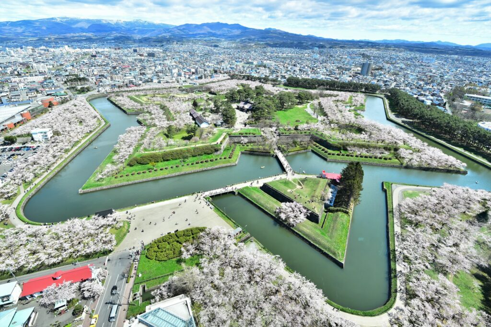

Hakodate
Hakodate est la troisième ville de l'île de Hokkaidō au Japon, derrière Sapporo et Asahikawa. La ville a pendant longtemps été l'unique porte d'entrée pour accéder à Hokkaidō principalement en tant que port de marchandises et de passagers. La vue de Hakodate depuis le mont Hakodate est l'un des paysages urbains les plus connus du Japon, le centre-ville étant construit sur un bras de terre semblable à un tombolo.
La ville moderne de Hakodate telle qu'elle est aujourd'hui est apparue au XIXe siècle, au moment de l'ouverture du Japon sur le monde. Le quartier historique de Motomachi abrite de nombreux bâtiments datant de cette période.
N'oubliez pas de remonter le temps en vous promenant tranquillement dans les rues de Hakodate et découvrez le complexe d'entrepôts en briques rouges de Kanemori, qui est aujourd'hui l'une des attractions incontournables de la ville pour faire du shopping et se restaurer.
Hakodate brille de mille feux une fois la nuit tombée. Pour profiter d'une vue imprenable, deux possibilités s'offrent à vous : le mont Hakodate ou la tour de Goryokaku. D'un point de vue ou de l'autre, vous pouvez admirer la ville qui s'étend sous vos yeux, dans toute sa splendeur lumineuse. Une autre attraction à ne pas manquer est le mont Esan, qui se trouve à 2 h de bus à l'est de Hakodate. Le mont Esan est un volcan actif réputé pour la profusion de plantes alpines qui y poussent. Ne manquez pas la floraison des azalées au début de l'été, lorsque les champs au pied de la montagne flamboient d'un rouge éclatant.